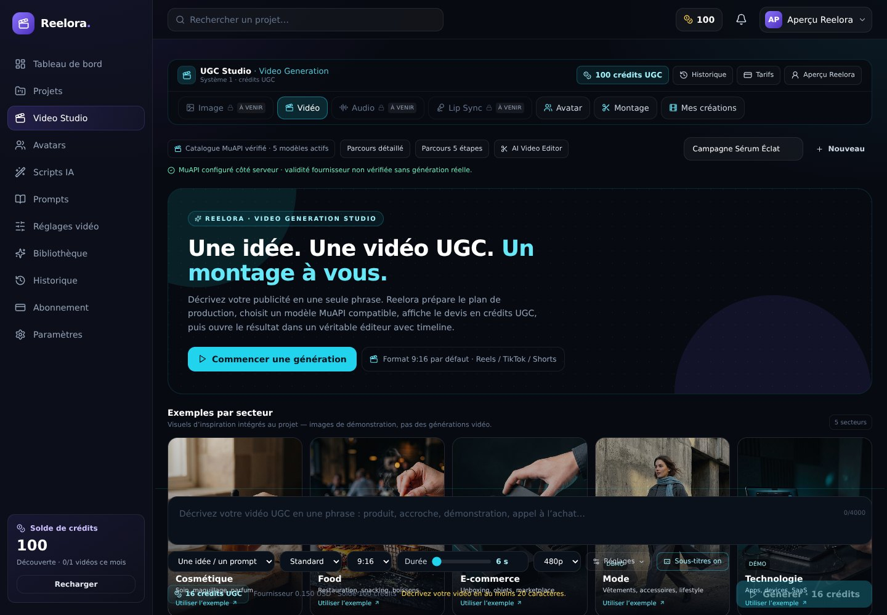
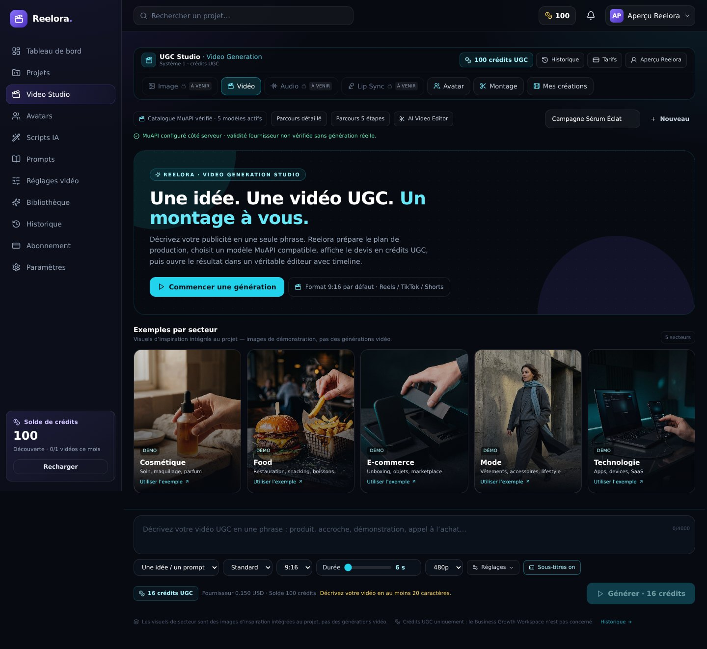
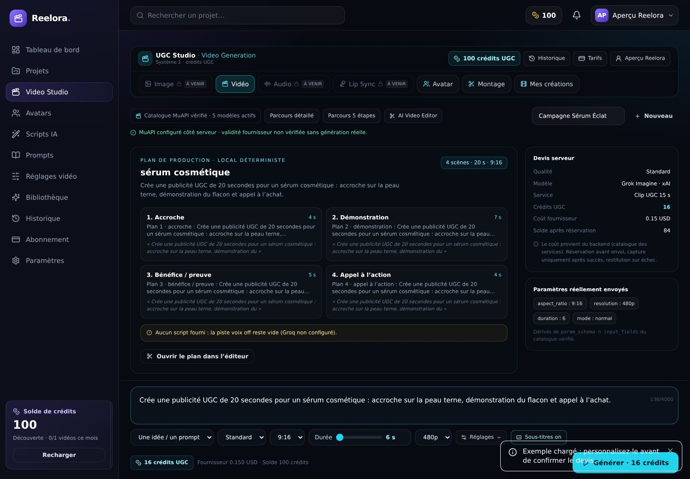
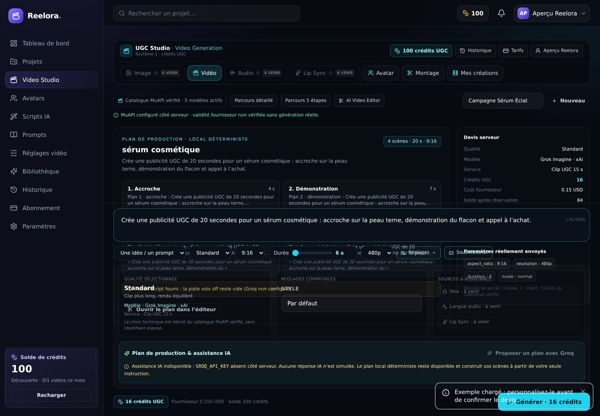
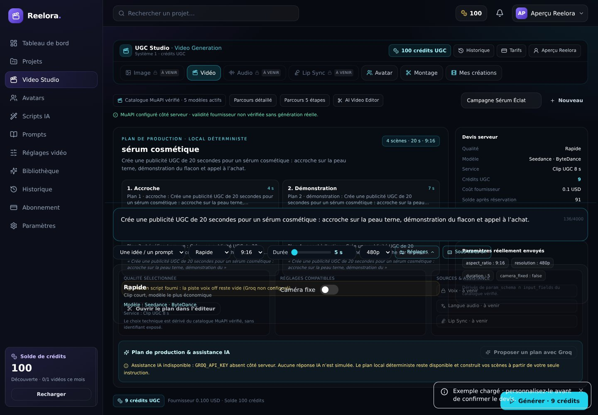
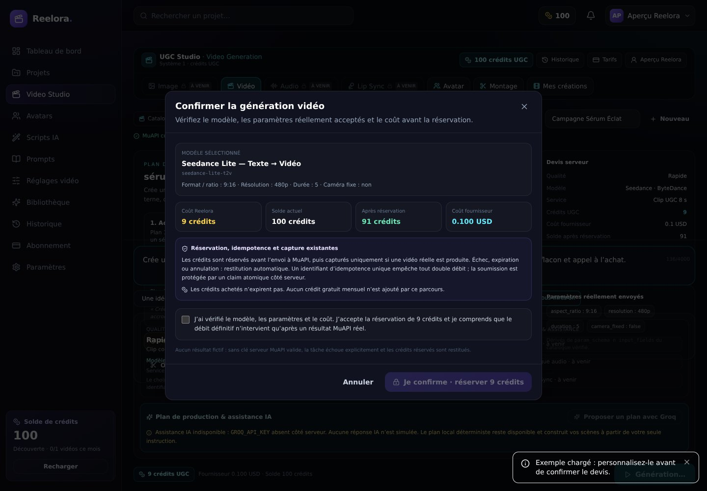
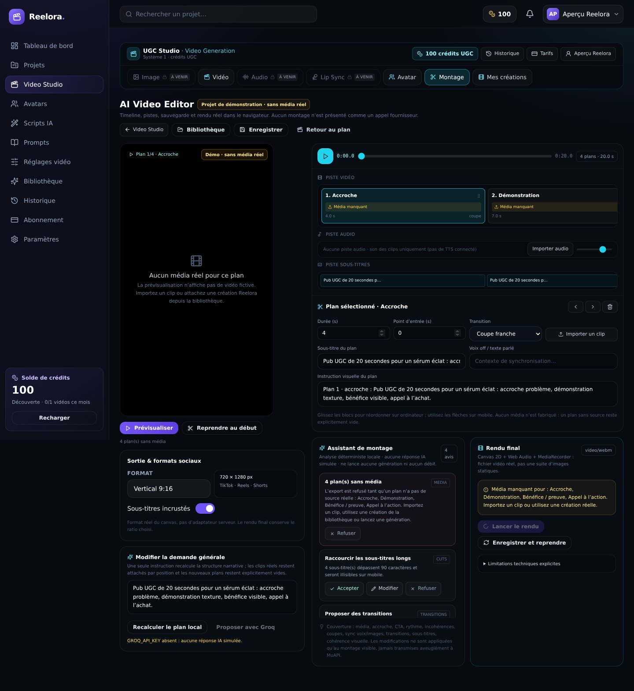
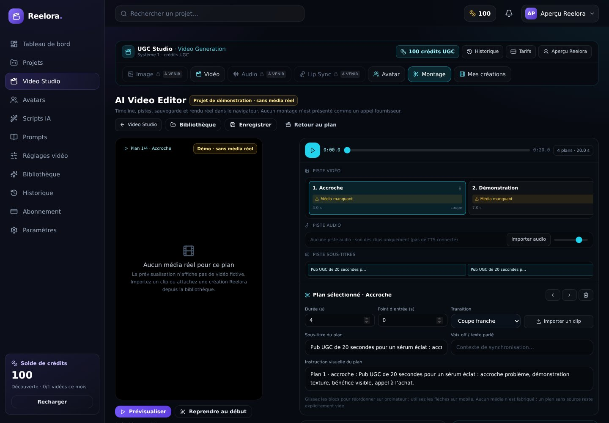
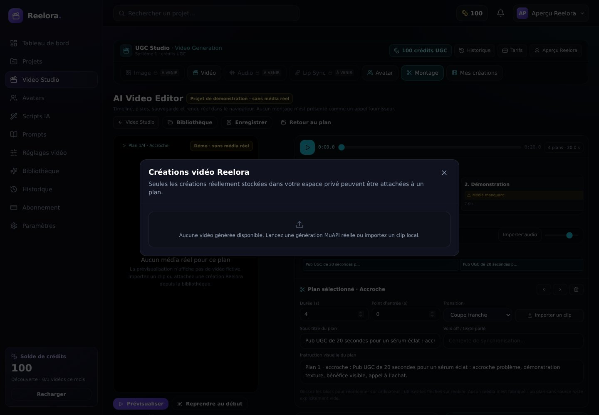
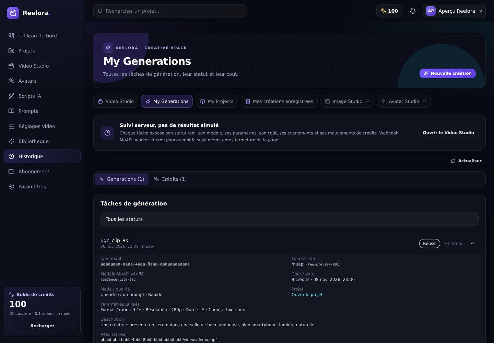
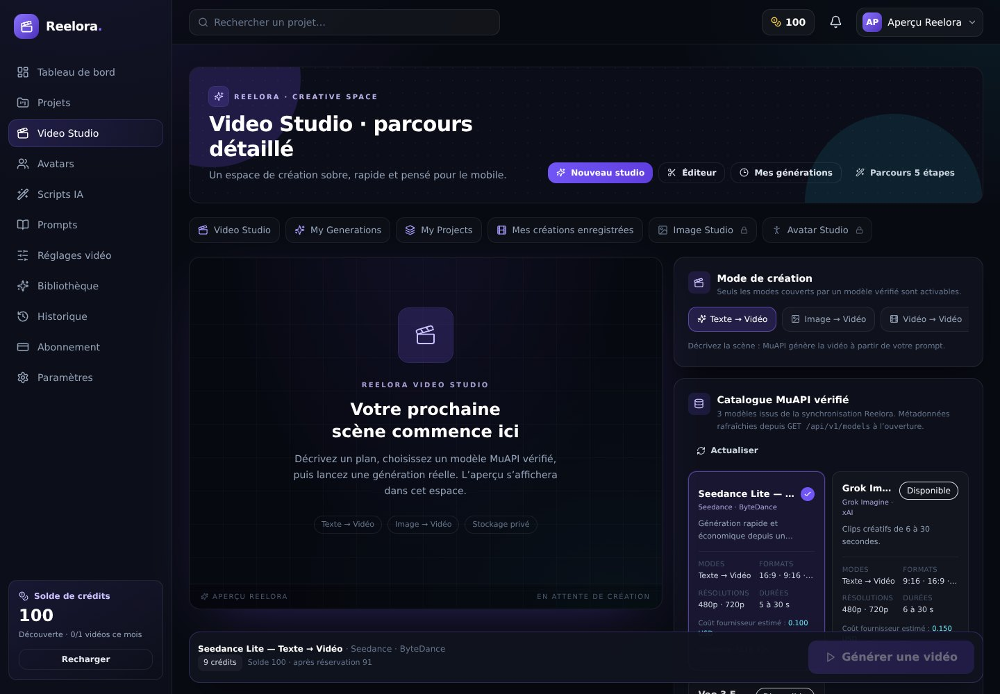
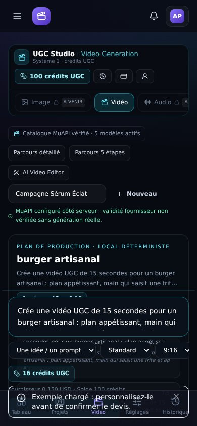
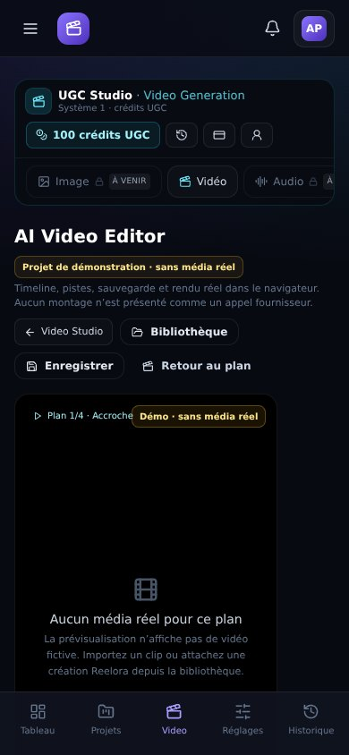
10/10 interactions vérifiées · 14 captures · 0 erreurs console · 0 erreurs page · 56 appels backend interceptés · aucune génération fournisseur lancée. Les visuels de secteur sont des images de démonstration intégrées au projet.












